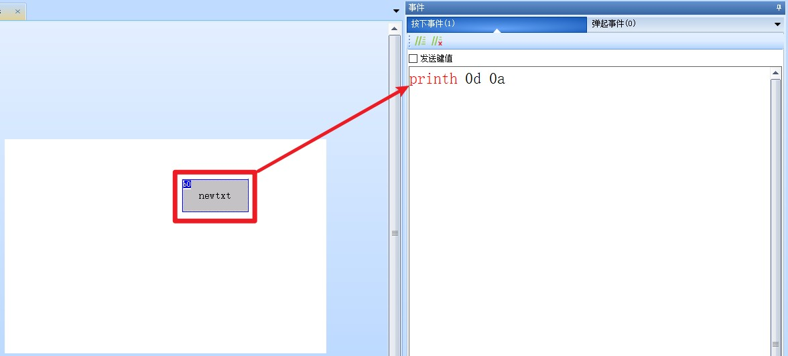
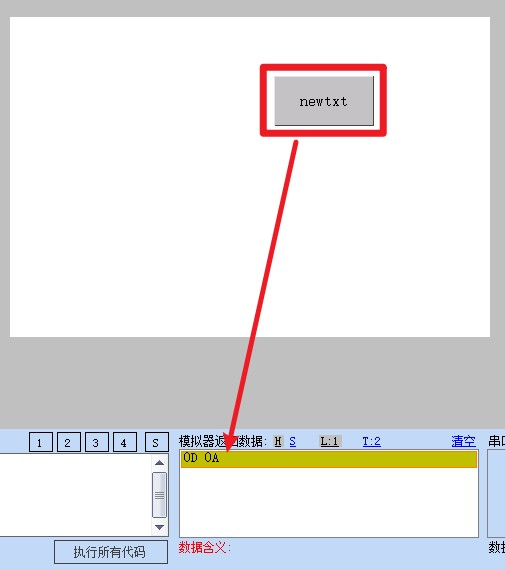
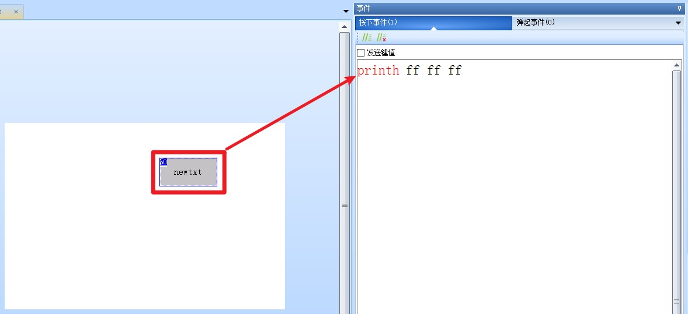
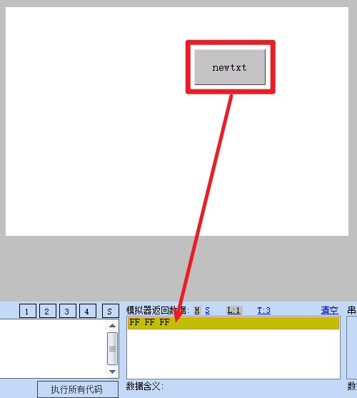
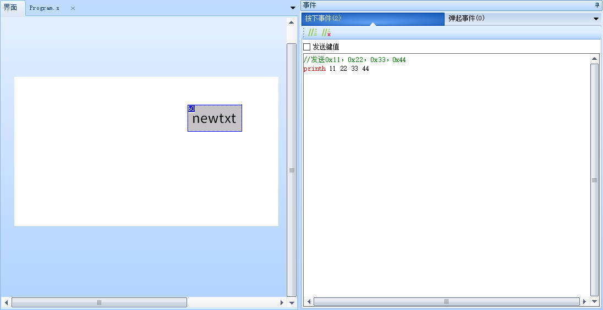
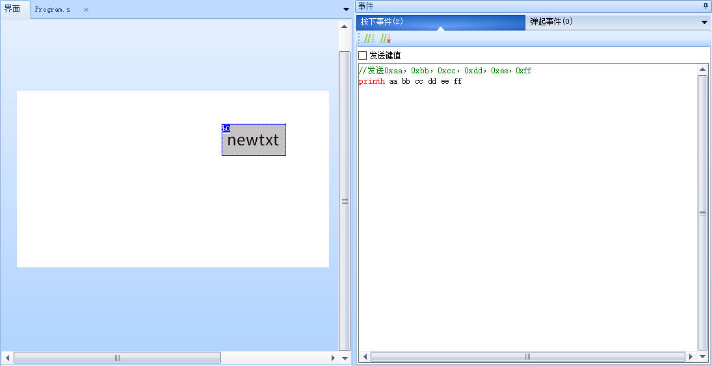

printh-从串口打印16进制
printh hex
hex:需要发送的固定的16进制，hex可以是多个16进制，必须写成偶数个的形式
正确：printh 0d 0a
错误：printh d a
正确：printh 05 03
错误：printh 5 3
printh-示例1
在按钮的按下事件（或弹起事件）中编写以下代码
//在音频通道0上播放ID为1的音频文件，循环播放
printh 0d 0a

点击调试后，点击按钮，即可发出对应的数据

注意
请注意不能写成 printh d a ， printh后面的数据必须将长度补全为两位，也就是printh 0d 0a
例如发送数值：1，不能写成printh 1，必须写成printh 01
printh-示例2:发送3个0xff
在按钮的按下事件（或弹起事件）中编写以下代码
//串口屏发送 0xff 0xff 0xff，也可以写成 printh FF FF FF
printh ff ff ff

点击调试后，点击按钮，即可发出对应的数据

printh-示例3
//发送0x11，0x22，0x33，0x44
printh 11 22 33 44

printh-示例4
//发送0xaa，0xbb，0xcc，0xdd，0xee，0xff
printh aa bb cc dd ee ff

注意
需要发送多个固定的16进制数据时，建议用一个printh发送即可，不建议使用多个printh进行发送
使用printh指令发送数据的时候，设备仅仅只发送指定的字符
参数中每组字符间必须有且只能有一个空格隔开，16进制的字符串表达式大小写均支持。
printh只能发送固定格式的16进制数据,不能发送变量,变量需要使用prints指令 prints-从串口打印一个变量/常量
printh指令-样例工程下载
演示工程下载链接：